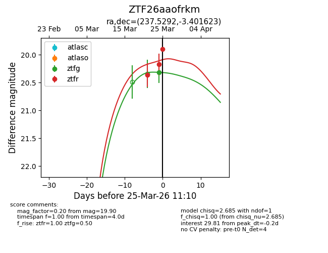
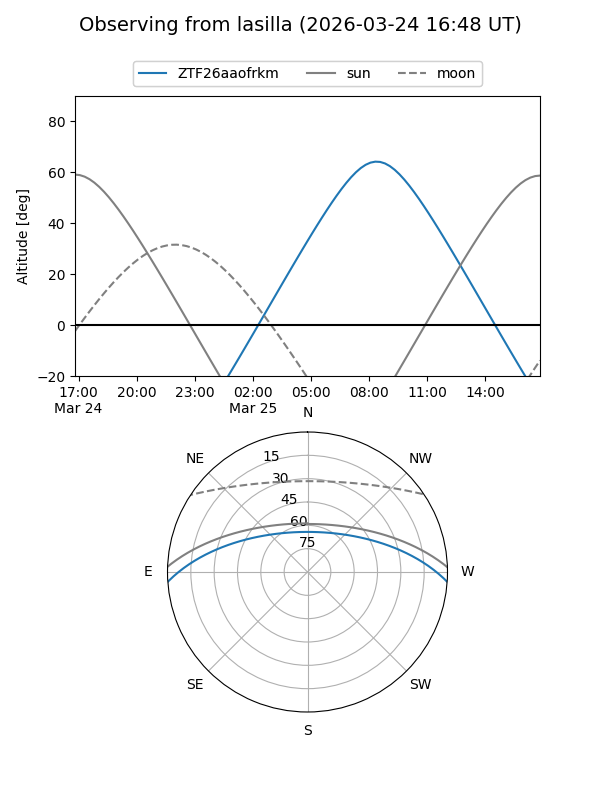
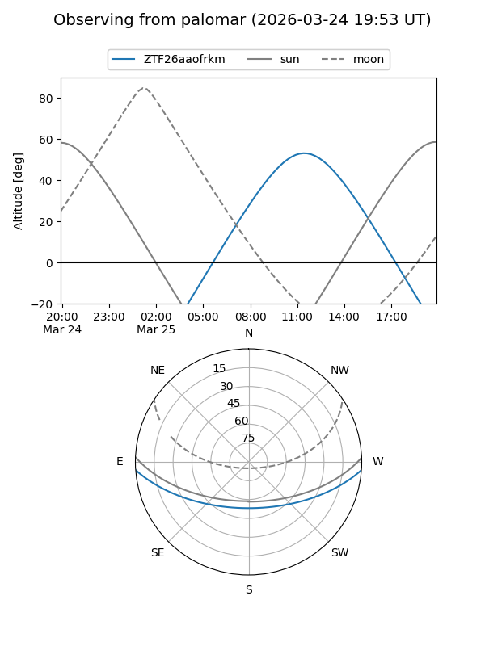
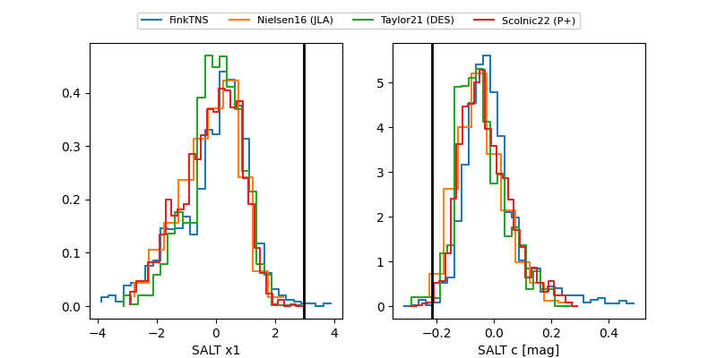

ZTF26aaofrkm
Target ZTF26aaofrkm at 2026-03-25 11:13
Aliases and brokers:
FINK: link
Lasair: link
ALeRCE: link
alt names
ZTF26aaofrkm (ztf,fink_ztf)
Coordinates:
equatorial (ra, dec) = 237.5292,-3.40162
equatorial (HMS+DMS) = 15:50:07.00,-03:24:05.84
galactic (l, b) = (4.7175,+37.21183)
Flags:
Photometry:
last ztfg=20.32, ztfr=19.90
1 ztfg, 3 ztfr detections
Lightcurve

Visibility


Additional plots
